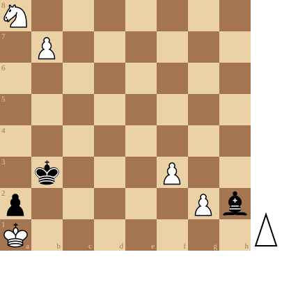

Pat: het ultieme redmiddel

Een speler staat pat indien:
- hij aan zet is
- niet schaak staat
- geen enkel stuk reglementair kan verzetten!
Vele schakers denken dat dit toch wel erg zeldzaam is.
Misschien is dit wel zo, maar toch kan streven naar pat het laatste redmiddel zijn.
Schaken is een spel met vreemde regels maar het zijn precies deze die de partij extra kruiden.
De volgende stelling maakt dit duidelijk:

In deze stelling weet Wit (aan zet) toch te ontsnappen aan het dreigend mat!
Je kan de video ook bekijken op dropboxOf speel hier na:
(Je kan de partij hier downloaden in PGN formaat)